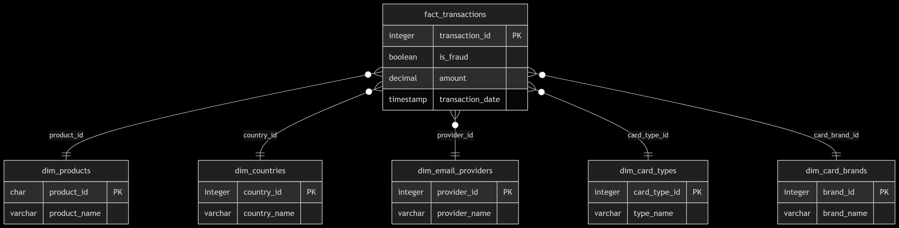

Data Warehouse
Un Data Warehouse (DWH) è un sistema di archiviazione centralizzato che integra dati da diverse fonti, ottimizzandoli per analisi e reporting. Nel progetto ARDEO S.H. - FTSR, il DWH è progettato per tracciare transazioni, utenti e frodi.
Diagramma E/R

Possibili query
Analisi Frodi: Andamento Temporale
-- Frodi per mese/anno con trend
SELECT
DATE_TRUNC('month', transaction_date) AS mese,
COUNT(*) AS transazioni_totali,
SUM(CASE WHEN is_fraud THEN 1 ELSE 0 END) AS frodi,
ROUND(100.0 * SUM(CASE WHEN is_fraud THEN 1 ELSE 0 END) / COUNT(*), 2) AS percentuale_frodi
FROM fact_transactions
GROUP BY mese
ORDER BY mese;Utilizzo: Identifica stagionalità nelle frodi.
Top 5 Paesi a Rischio
-- Paesi con più frodi (in valore assoluto e percentuale)
SELECT
c.country_name AS paese,
COUNT(*) AS transazioni_totali,
SUM(CASE WHEN t.is_fraud THEN 1 ELSE 0 END) AS frodi,
ROUND(AVG(t.amount), 2) AS importo_medio_frode
FROM fact_transactions t
JOIN dim_countries c ON t.country_id = c.country_id
GROUP BY c.country_name
ORDER BY frodi DESC
LIMIT 5;Utilizzo: Geografia delle frodi per focalizzare controlli.
Analisi per Tipo di Carta
-- Frodi per tipo carta (Credit/Debit) e brand
SELECT
ct.type_name AS tipo_carta,
cb.brand_name AS brand,
COUNT(*) AS transazioni,
SUM(CASE WHEN t.is_fraud THEN 1 ELSE 0 END) AS frodi
FROM fact_transactions t
JOIN dim_card_types ct ON t.card_type_id = ct.card_type_id
JOIN dim_card_brands cb ON t.card_brand_id = cb.brand_id
GROUP BY ct.type_name, cb.brand_name
ORDER BY frodi DESC;Utilizzo: Individua le carte più vulnerabili.
Email Provider a Rischio
-- Provider email associati a frodi
SELECT
e.provider_name AS email_provider,
COUNT(*) AS transazioni,
SUM(CASE WHEN t.is_fraud THEN 1 ELSE 0 END) AS frodi,
ROUND(100.0 * SUM(CASE WHEN t.is_fraud THEN 1 ELSE 0 END) / COUNT(*), 1) AS tasso_frode
FROM fact_transactions t
JOIN dim_email_providers e ON t.provider_id = e.provider_id
GROUP BY e.provider_name
HAVING SUM(CASE WHEN t.is_fraud THEN 1 ELSE 0 END) > 0
ORDER BY tasso_frode DESC;Utilizzo: Indirizzi email sospetti da bloccare.
Transazioni Fraudolente "Atipiche"
-- Frodi con importo > 3 deviazioni standard dalla media
WITH stats AS (
SELECT
AVG(amount) AS avg_amount,
STDDEV(amount) AS std_amount
FROM fact_transactions
WHERE is_fraud = TRUE
)
SELECT
t.transaction_id,
t.amount,
t.transaction_date,
c.country_name
FROM fact_transactions t
JOIN dim_countries c ON t.country_id = c.country_id
CROSS JOIN stats
WHERE t.is_fraud = TRUE
AND t.amount > (stats.avg_amount + 3 * stats.std_amount)
ORDER BY t.amount DESC;Utilizzo: Rileva frodi con importi anomali.
Customer Profiling (Utenti Premium vs Non Premium)
-- Confronto frodi tra utenti premium e non
SELECT
u.is_premium,
COUNT(*) AS transazioni,
SUM(CASE WHEN t.is_fraud THEN 1 ELSE 0 END) AS frodi,
ROUND(100.0 * SUM(CASE WHEN t.is_fraud THEN 1 ELSE 0 END) / COUNT(*), 2) AS tasso_frode
FROM fact_transactions t
JOIN dim_users u ON t.user_id = u.user_id
GROUP BY u.is_premium;Utilizzo: Verifica se gli account premium sono più sicuri.
Heatmap Oraria delle Frodi
-- Frodi per ora del giorno
SELECT
EXTRACT(HOUR FROM transaction_date) AS ora,
COUNT(*) AS transazioni,
SUM(CASE WHEN is_fraud THEN 1 ELSE 0 END) AS frodi
FROM fact_transactions
GROUP BY ora
ORDER BY ora;Utilizzo: Individua gli orari più rischiosi.
Analisi Cross-Product
-- Combinazioni prodotto/carta più rischiose
SELECT
p.product_id,
cb.brand_name AS carta,
COUNT(*) AS transazioni,
SUM(CASE WHEN t.is_fraud THEN 1 ELSE 0 END) AS frodi
FROM fact_transactions t
JOIN dim_products p ON t.product_id = p.product_id
JOIN dim_card_brands cb ON t.card_brand_id = cb.brand_id
GROUP BY p.product_id, cb.brand_name
HAVING SUM(CASE WHEN t.is_fraud THEN 1 ELSE 0 END) > 0
ORDER BY frodi DESC;Utilizzo: Trova pattern tra prodotti e metodi di pagamento.